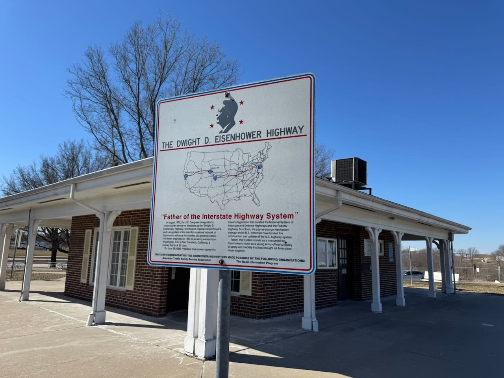

added september 2025: i came across this e-mail i had sent to myself in the summer of 2015. i have referenced this period a few times in my writings on this site, and from what i can recall, i was in a existential crisis at age thirteen. this e-mail was the final one of a chain that i would reply to, to myself, as notes or a journal i suppose. i kept a diary when i was 7–9, but nothing too notable is there. this is the last remaining article i have from this era, other than pictures. i didn’t really start writing until i was in high school, and really just the last few years. i wish i could give my younger self a hug :’(
From: <**********@gmail.com>
Date: Tue, Jun 16, 2015 at 16:58
Subject: …………
To:
Jurassic World on Blu Ray
T-Shirt
read about dinosaurs
jurassic park dino merch or action figs
I don’t want to mess up in life.
I don’t want to get old either
I know I can’t change hat so I should just move on
but I want to live a good life and not mess up
I’m just scared
life is crazy and I question the meaning
I don’t like how time goes by so fast
later tuesday, june 16
I need help
I dint want to mess up
I feel bad for mom and dad
I’m scared
i don’t want to mess up
i wish i was younger
i feel bad for animals
i feel bad for people that don’t have money
i feel bad for everybody
i miss things
i don’t want to mess
theres this weird connection feeling that i get when I think about me and mom or me and dad like when we are in a car it remind me of when i was younger and it makes me sad
i miss being little
i miss coming to mom car and having a new toy to play with
toys make me sad
i miss
i miss being little
i feel bad about shoes and money
I feel bad about wakeboard camp
I wish I was still happy
i hate the divorce
i want them back together
i miss the apt
i hate how time flies by so fast
i want to stay younger
it makes me super sad when i look back at old memories
I feel like everyday is wasted
I feel like every second that I get older I get more sad.
I cry about a ll this stuff all the time
wakeboard camp
writing letter
magaritaball and yel
apt
birthday and florid/uni
being younger
moms house
shadyxv and apt
I WOULD PAY SO MUCH MONEY TO GO STAY AT THE APARTMENT FOR 2 DAYS
before the divorce
when we were a happy family
i miss
i miss memories
i miss being happy
before june 2013
that when everything was perfect
i feel bad about the house and money
i am scared and I question life
I need help
wednesday morning
I miss rainy days on plains
I miss moms estate sales
i wish i was little
I wish i grew up in the 90’s
I don’t want to mess up in life and i want to have fun
I wish
I was a kid forever
I WANT TO BE A MUSIC PRODUCCER AT STRANGE ON SOMEWHERE ELSE
I WANT TO BE A MUSIC PRODUCER
i love dinosaurs
I want to visit a nasa museum
I want to go to NY
i want to drive to California
I feel so bad for the poor
I hate how we all have super soficasted lives where the government and our society have to to things and we make x amout of dollars a year and its dumb howler whole world runs on stupid pieces of paper. Like I don’t want to have to go to this and pay that… why can’t we all know to love each other and be peaceful and happy and free. I feel like my life is going to waste when i HAAVE to go to work or have to pay/do something. Why can’t we all have jobs that we can enjoy and have fun doing. i think its crazy when most people go to work and waste their day and life and time doing something that then don’t enjoy. thats why i want to live a fun life where i enjoy what I do.
I feel bad about clothes
I wish time never went by.
I miss earlier today
I wish i was younger
I wish time wasn’t so fast.
thats why i went all nuts last night
i miss not having my phone
I hate how time goes by so fast
I wish i was younger
i kinda like not having my phone
I miss each day more and more
I wish people already didn’t know me
I don’t want to mess up in life
I feel bad about people
I just want to be happy
I think its crazy how so many kids can spend hours upon hours at a time doing stuff on social media to get fake likes/followers when you compare it to the lives of soldiers where they worry about living.
that why I like not having my phone
I miss yesterday and earlier today.
I miss everyday more and more
i need to vacuum
I don’t want to grow up and I want to be a kid forever
I don’t want to have to deal with being a adult and being a parent and stuff
I just want to stay little forever
I feel like I’m not very happy anymore and I don’t like doing things anymore as much as I used to
i kindaliked not having my phone
I feel so bad for mom because of *****
advice that people give me does absolutely nothing
I JUST FEEL STUCK
it makes me mad and sad and want to cry
I just want to be younger
im super stuck
i don’t know my dream
ii feel really bad about complaining about thus to mom when she has *****
I miss the apartment and beingg younger
thursday morn
I miss each day more and more
thursday at night
I miss every memory I’ve ever had and I miss the days
I regret decisions that I’ve made like my braces or being mean to somebody
I don’t want to get older or time to go by or grow up.
i don’t want to grow up
genital areas make me uncomftorable
I kinda wish i was at dads
Im to scared to tell mom or dad that i don’t like being at each other houses at certain times. like sometimes I’m at moms and i want to be at dads (right now) but i don’t want to let mom down and i feel bad and i feel like i hurt her feelings
Same thing with dad. Ive been at his house for a while when its my week with him but I want to go to moms but I don’t want to hurt his feelings. i know the girls do it and mom and dad don’t care but for mr it feels like its different.
I want calls black converse
I hate braces soon much
i wish I could stay a kid forever
I just wish none of this happened and it all stopped
I miss being little
I miss the apartment.
I miss dad
i miss mom too
I wish I was little
i don’t want to grow up
My hair down makes me uncomfortable and I want to cut it off
Friday morning
i miss being at dads in april watching all of the scream movies and checking the reviews on cherry bomb and barter 6
I feel like everyday is wasted when I stay in bed all day until 12:30
I feel so bad for mom